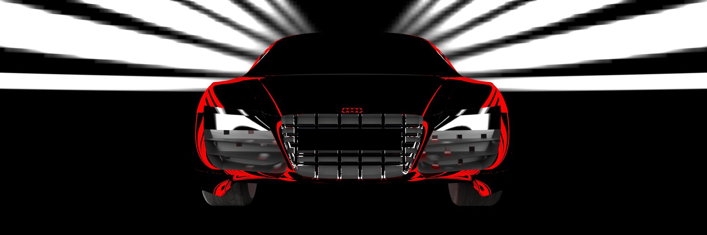
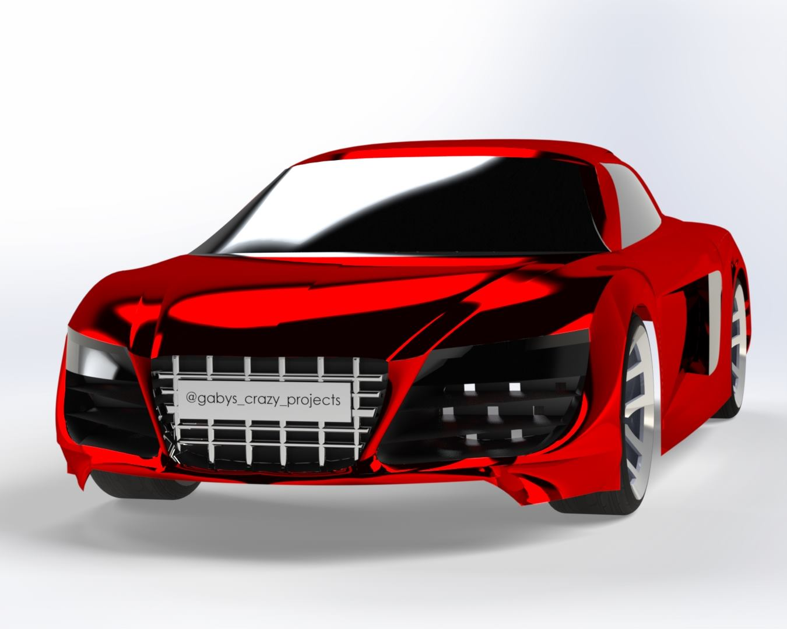
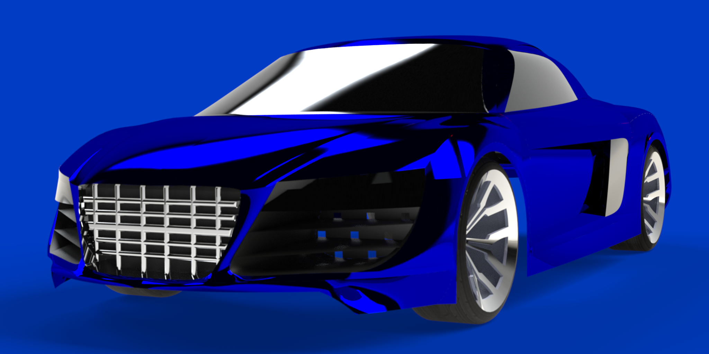
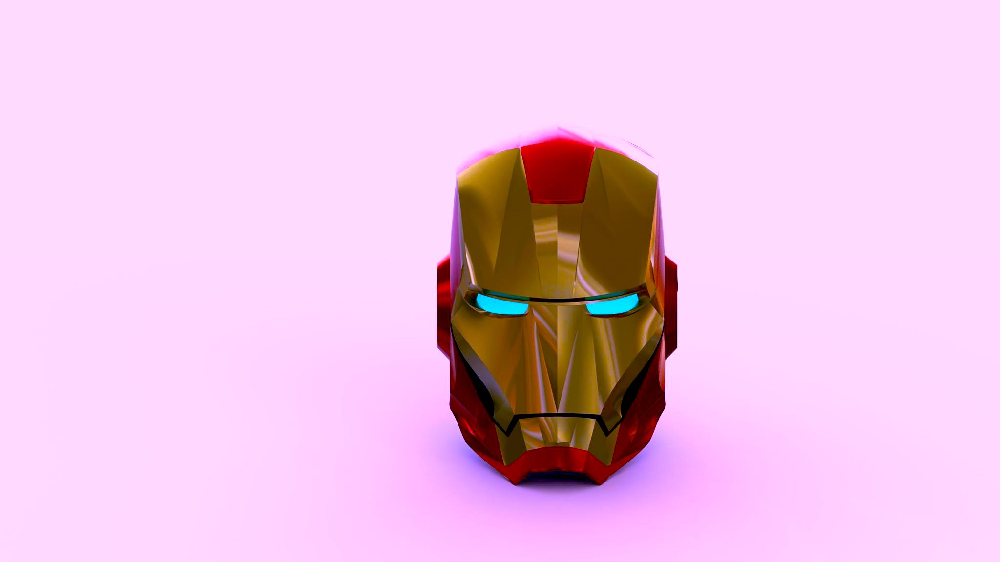
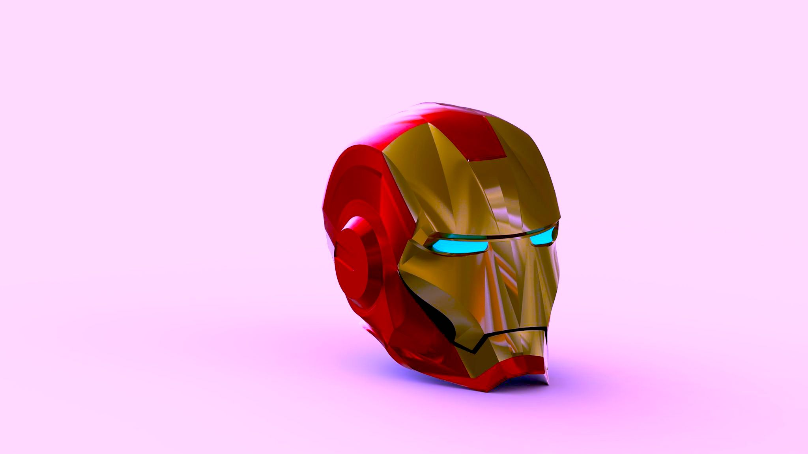
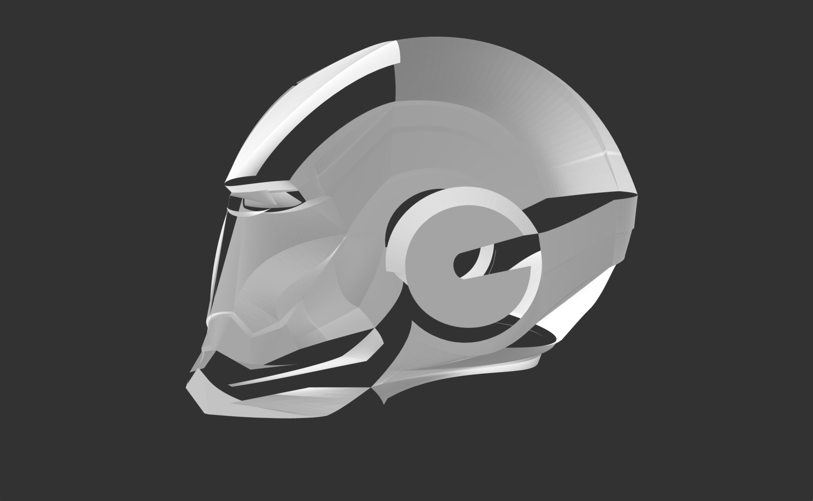
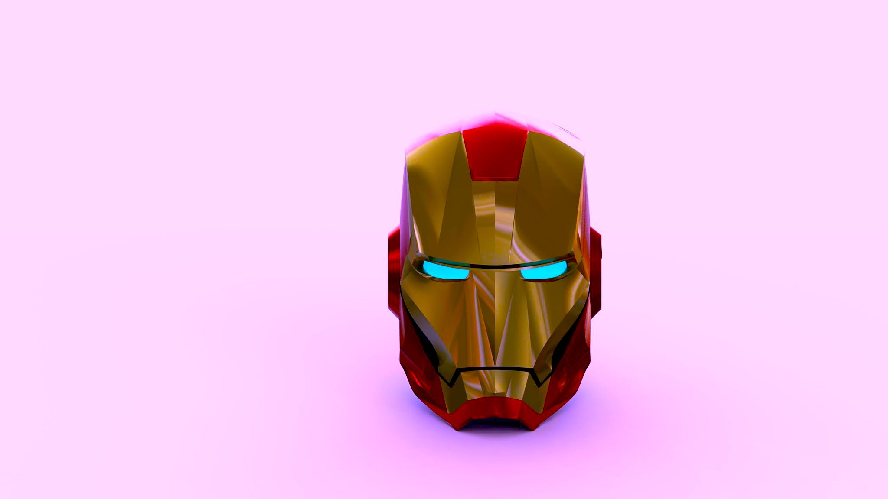
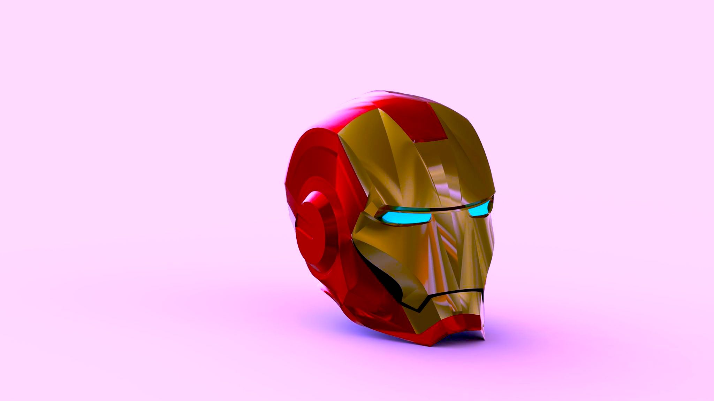
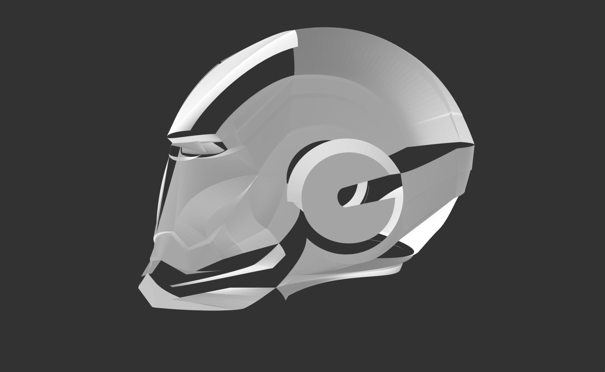

Project Of The Year nominee: Audi R8 Spyder WITH A TWIST
Nominated for Project Of The Year 2020. It is an Audi R8 design but with some innovative and sustainable touches. First, by changing the wheels to spherical, opening to a whole new world in mechanics, and second, by putting solar panels on the roof, so the car can be a hybrid between solar and electric. Made in Solidworks and rendered in Solidworks Visualize.
Audi R8 3D model & render
This was my #FailInLove Innovation Challenge. 3D model of one of the most intricated designs in cars in right, front, and isometric views. Modeled in Solidworks and rendered in Solidworks Visualize.



STLs and DXFs for infrared thermometers
Due to the Covid-19 pandemic, I designed and modeled these cases for infrared thermometers in the simplest shape possible for them to manufacture quickly and get to health centers. Cases modeled and rendered in Solidworks.


 




